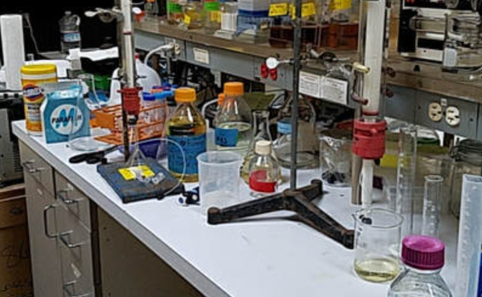
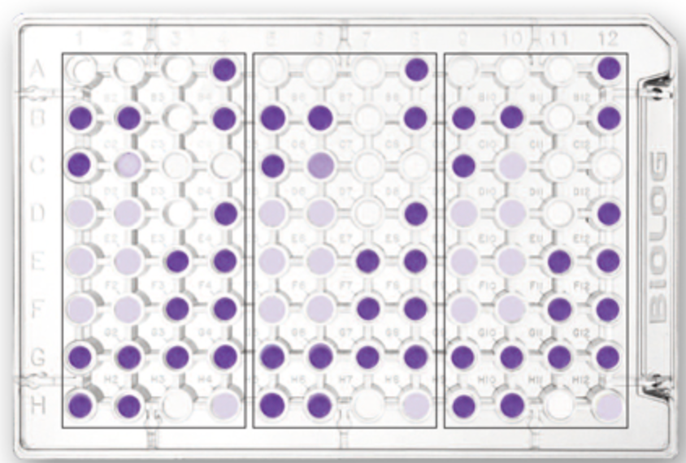

02
Research & Lab Experience

Research
Computational Chemistry Undergraduate Researcher
Dr. Ruben Abagyan Lab · San Diego, CA
Dec 2025 – Present- Using Linux and the Protein Data Bank to extract structural data for specific biomedical targets
- Discovering new drug leads with an emphasis on multi-target pharmacology profiling
- Applying computational methods to map molecular interactions and identify therapeutic candidates
Teaching
Organic Chemistry Tutor
UCSD Department of Chemistry and Biochemistry
Oct 2025 – Present- Conducting one-on-one tutoring sessions helping students master reaction mechanisms, stereochemistry, and synthesis strategies in Organic Chemistry

Lab
General Chemistry Lab
UCSD
- Synthesized Iron (III) Oxalate compound using oxalic acid to create Fe(NH₄)₂(SO₄)₂, followed by crystallization and vacuum filtration
- Performed gravimetric analysis to determine molarity of aluminum in unknown solutions using 8-hydroxyquinoline precipitation
- Conducted acid-base titration by standardizing 0.1 M NaOH with KHP, mapping titration curves and calculating equivalence points

Lab
Plant Biology Lab
UCSD
- Collected soil samples from local Lemonade Berry and California Sagebrush plants to study soil conditions and microbiomes
- Compared carbon source metabolization between soil microbiomes through microbial assays and statistical t-tests
- Analyzed microbial populations through microbial plating, PCR, gel electrophoresis, and chi-square analysis